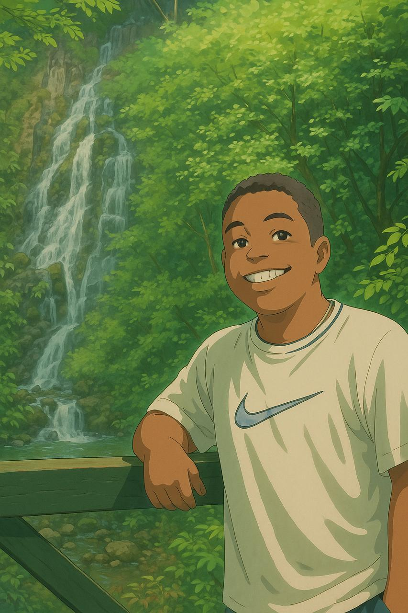

Joaquin Lu Zheng
Soy estudiante de Ingenieria de Software. Desarrollador con
experiencia en React para interfaces web interactivas, y en Python
para lógica backend, automatización y proyectos de inteligencia
artificial. Me apasiona crear soluciones tecnológicas que combinen
diseño funcional con inteligencia computacional. Siempre estoy
aprendiendo nuevas herramientas y aplicando mis conocimientos en
proyectos reales que resuelvan problemas del mundo actual.
Jabneel Gonzalez

Soy estudiante de Ingenieria de Software. Programador con
experiencia en desarrollo backend, integrando APIs REST, bases de
datos relacionales y lógica de servidor. He trabajado conectando
sistemas físicos como Arduino y Raspberry Pi con aplicaciones web,
permitiendo el monitoreo y control de dispositivos desde plataformas
digitales. Me especializo en crear soluciones robustas que conectan
el hardware con servicios web de forma eficiente.
Manuel Guillen
Soy estudiante de Ingenieria de Software. Programador con
experiencia en React y desarrollo frontend, especializado en crear
interfaces web modernas, dinámicas y responsivas. También tengo
conocimientos en Arduino y Raspberry Pi, con los que he desarrollado
proyectos de automatización, monitoreo y control utilizando sensores
y dispositivos físicos. Combino habilidades en software y hardware
para crear soluciones integrales e interactivas.
Diego Santimateo

Soy Ingeniero de Software enfocado en ingeniería de datos, con experiencia
en el diseño e implementación de arquitecturas escalables en la nube,
especialmente en AWS. He desarrollado soluciones robustas para la descarga
masiva de información mediante APIs, he optimizado procesos complejos mediante
pipelines ETL eficientes y altamente confiables. He creado y entrenado modelos
avanzados de visión artificial, utilizando ResNet para la clasificación del estado
de frutas.
Daniella De Leon
Soy estudiante de Ingenieria de Software. Programadora apasionada
por el desarrollo Front-End con experiencia en HTML, CSS y
JavaScript. Me especializo en crear interfaces web modernas, desde
el diseño de wireframes hasta su implementación y mantenimiento.
También tengo interés en la inteligencia artificial y experiencia
práctica con Arduino y Raspberry Pi, integrando software y hardware
en uno.